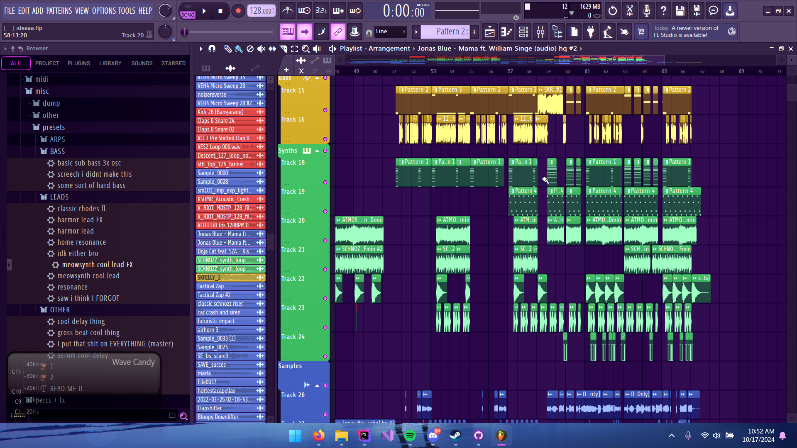
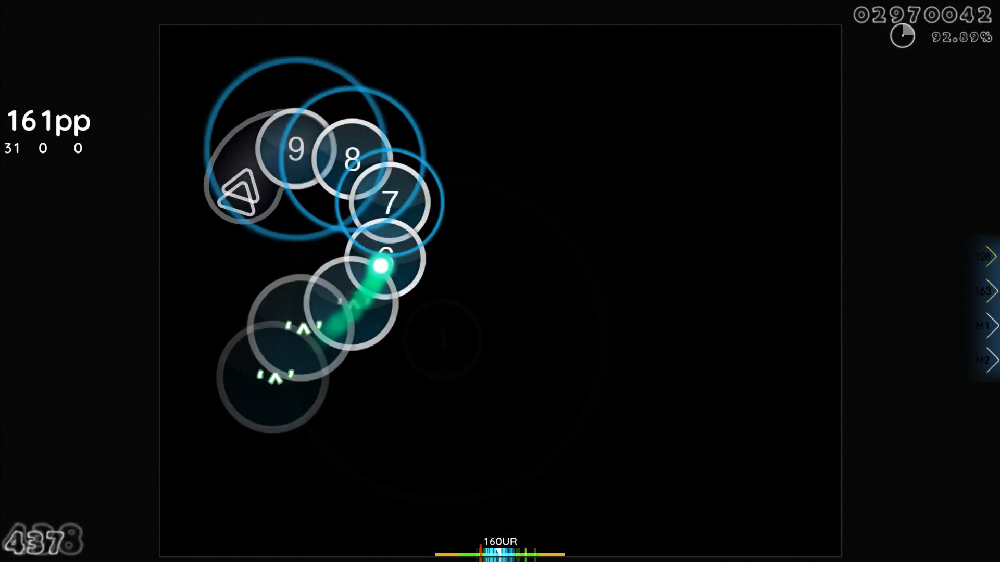

In mijn vrije tijd maak ik vaak muziek. Dit doe ik met software zoals FL Studio 2024.
Genres die ik maak zijn vooral: Dariacore, Complextro , en Drum 'n Bass.
Iets anders wat ik ook doe in mijn vrije tijd is natuurlijk gamen.
Ik speel vooral rhythm games zoals osu!, maar ik speel ook shooters zoals Call of Duty en VALORANT.
